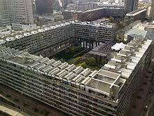
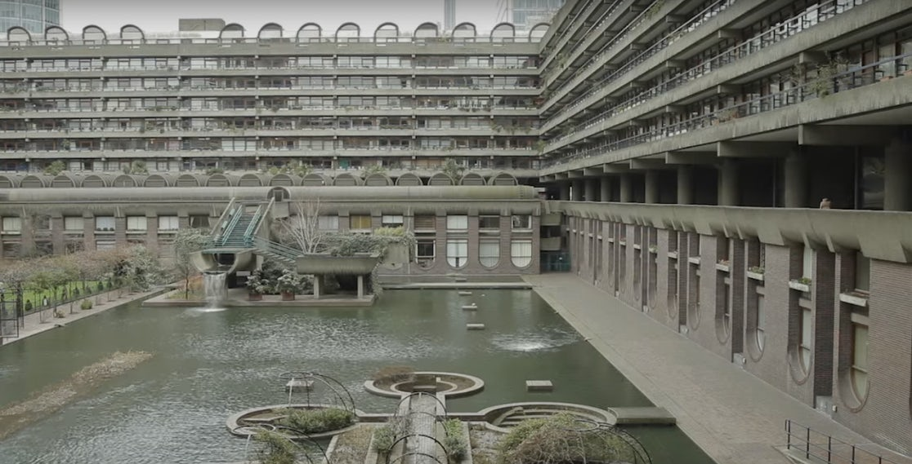
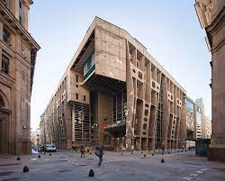
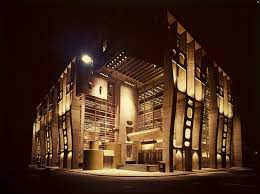
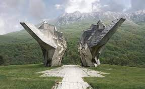
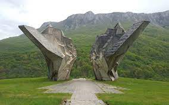
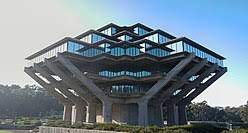
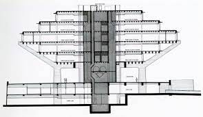

Zaha Hadid was born in Iraq, raised in the UK, and made her mark across the planet. The ground-breaking architect passed away last March leaving behind a legacy that is peerless in many regards. Her buildings can be found in Spain, the U.S., the UK, Germany, Austria, China, Scotland, France, Singapore, Azerbaijan, Saudi Arabia, Belgium, Denmark, the UAB, Lebanon, Russia and Italy..
Hadid was the first female to win the Pritzker Prize for architecture and the Royal Gold Medal. She also won the Stirling Prize (the UK’s highest architectural honor) in consecutive years and was made a dame by Queen Elizabeth II. Many credit her with freeing architecture from its symmetrical and geometric roots. Her designs have a flow to them; they curve will a feeling of unrestrained perpetual motion. Hadid set out to break convention, and that’s exactly what she did.
The aquatic center she designed for the London Olympics has a stunning cohesion to its interior and exterior. The aesthetics perfectly reflect the function of the space. The Z-shaped Evelyn Grace Academy is quite possibly the sleekest school in the world, and the Zaragoza Bridge Pavilion over River Ebro is a triangular, undulating masterpiece. The Vitra Fire Station was Hadid’s first project, and it marked the entrance of an artist who wasn’t afraid to take risks. It’s sharp, jutting shapes create a feeling of abstract and open geometrical freedom. From the very beginning it was clear that Hadid was not interested in conforming or following trends; she was dedicated to innovation and experimentation.
The Heydar Aliyev Cultural Center in Azerbaijan is perhaps her most striking and curvy creation (which is really saying something.) It billows, dips and slides in balletic movements. It’s daring and yet wildly graceful. Hadid, a pioneer of neo-futurism was always pushing the boundaries of what could be achieved in structural construction. Dramatic, fluid curves of steel and glass appear utterly seamless.
520 West 28th St is the first NYC residential project from Hadid. The building is located on the famed High Line in Hell’s Kitchen and it set to be one of the most jaw-dropping condo buildings in a city filled with jaw-dropping condos. Floor-to-ceiling windows bend around corners of the futuristic structure. The design, as with many of Hadid’s is graceful and ground-breaking. Moreover, the building featured a private imax theater, a spa and a 75-ft sky-lit swimming pool.
2.Histroy of Barbican Estate


The Barbican Estate, or Barbican, is a residential complex of around 2,000 flats, maisonettes, and houses within the City of London in Central London, in an area once devastated by World War II bombings and densely populated by financial institutions. Originally built as rental housing for middle and upper-middle-class professionals, it remains to this day an upmarket residential estate. It contains, or is adjacent to, the Barbican Arts Centre, the Museum of London, the Guildhall School of Music and Drama, the Barbican public library, the City of London School for Girls and a YMCA (now closed),[1] forming the Barbican Complex
The Base Court continued to serve a military function during the reign of Edward I, but Edward III gave it to Robert d'Ufford, 1st Earl of Suffolk[7] who made it his London home. By the 16th century, it had passed to Charles Brandon, 1st Duke of Suffolk. Brandon married his ward Catherine Willoughby, daughter of María de Salinas who had been a confidante and lady-in-waiting of Catherine of Aragon and after his death the building was retained by the Willoughby family. The original Base Court seems to have been destroyed and the large building that replaced it was called Willoughby House, a name revived for part of the modern development.
The estate was built between 1965 and 1976, on a 35-acre (14 ha) site that had been bombed in World War II. The complex was designed by architects Chamberlin, Powell and Bon, whose first work was the ground-breaking Golden Lane Estate immediately north of the Barbican. Unlike its northern neighbour, however, the Barbican Estate was not social housing. Rather, it was designed and built for affluent City professionals and their families, with all flats let out at commercial rents by the Corporation of London.[15] To help let out the flats, brochures were produced, advertising the Barbican Estate as containing the perfect residences for well-heeled professionals and international businesspeople.[
3.Histroy of The Bank of London and South America


The bank's predecessor was incorporated in England on 27 September 1862[1] as the London, Buenos Ayres and River Plate Bank (Banco de Londres, Buenos Ayres y Río de la Plata), originally to operate in Buenos Aires. The bank soon opened branches elsewhere in Argentina, and it changed its name in 1865 to the London and River Plate Bank (Banco de Londres y Río de la Plata).
In 1936, BOLSA took over many of the operations of its chief rival, the Anglo-South American Bank, which had gone into liquidation. The acquisitions included Banco de A. Edwards, one of the largest banks in Chile.
In 1958, the bank formed a joint venture with the Bank of Montreal, known as the Bank of London and Montreal (BOLAM), headquartered in Nassau, Bahamas. BOLSA contributed its branches in Central and northern South America to the joint venture. In 1970, BOLSA bought out its joint venture partners, and regained its branches in Central America, Colombia, Ecuador and Peru, but not its branches in Venezuela, which BOLAM had closed in 1965.
In 1971, Lloyds Bank bought the controlling interest in BOLSA and merged it with Lloyds Bank Europe to form Lloyds and Bolsa International Bank.[3] This became Lloyds Bank International in 1974 and was merged into Lloyds Bank in 1986.[4] Banco de A. Edwards was sold in 1987 to Midland Bank, part of HSBC since 1992, and merged into Banco de Chile in 2001.
4.Histroy of Spomenik Memorials


For many years, Yugoslavia’s futuristic “Spomenik” monuments were hidden from the majority of the world, shielded from the public eye by their remote locations within the mountains and forests of Eastern Europe. That is, until the late 2000s, when Belgian photographer Jan Kempenaers began capturing the abstract sculptures and pavilions and posting his photographs to the internet. Not long after, the series had become a viral hit, enchanting the public with their otherworldly beauty. The photographs were shared by the gamut of media outlets (including ArchDaily), often attached to a brief, recycled intro describing the structures as monuments to World War II commissioned by former Yugoslavian president Josip Broz Tito in the 1960s and 70s.
The authorities of the Socialist Federal Republic of Yugoslavia established many World War II memorials during its existence. Several memorial sites were established between 1945 and 1960, though widespread building started after the founding of the Non-Aligned Movement.
Yugoslav president Josip Broz Tito commissioned several memorial sites and monuments in the 1960s and 1970s dedicated to World War II battles, and Nazi concentration camp sites. They were designed by notable sculptors, including Dušan Džamonja, Vojin Bakić, Miodrag Živković, Jordan and Iskra Grabul, and architects, including Bogdan Bogdanović and Gradimir Medaković. After Tito's death, a small number were built, and the monuments were popular visitor attractions in the 1980s as patriotic sites, and since the Yugoslav Wars and the dissolution of Yugoslavia, the sites are mostly abandoned.
In Slovenia, World War II Veteran Organisation and its branches yearly hold many commemorative events in regard with the subject of the monuments and people remember the fallen on the Day of the Dead.
On August 28, 2018, author Donald Niebyl published a book titled Spomenik Monument Database, the first-ever English-language guidebook on the WWII monuments of Yugoslavia, after conducting several years of intensive research.
5.Histroy of Geisel Library


On December 1, 1995 The University Library Building was renamed Geisel Library in honor of Audrey and Theodor Geisel (Dr. Seuss) for the generous contributions they have made to the Library and their devotion to improving literacy.
In the tower, floors 4 through 8 house much of the Library's collection and study space, while floors 1 and 2 house service desks and staff work areas. Some of the austerity of the original building has been lessened by the addition of the coved ceilings, painted walls, and carpeting throughout levels 1 and 2. The new color scheme complements the color scheme in the addition.
The Library addition, designed by Gunnar Birkerts, was deliberately designed to be subordinated to the strong, geometrical form of the existing library. The Library, designed in the late 1960's by William Pereira (original report), is an eight story, concrete structure sited at the head of a canyon near the center of the campus. The lower two stories form a pedestal for the six story, stepped tower that has become a visual symbol for Geisel Library. Whatever its metaphorical connotation, its image is preserved and enhanced by the concept for the addition.
The existing building had not been renovated since it was built in the 1960s. During 1992 the building was functionally updated and the tower, as it is called, was restored to a floorplan similar to the one originally designed by Pereira which allows for more reader stations. A new heating, ventilation, and air conditioning system was installed, the elevators were renovated, and a third public elevator was added. The book stacks received additional reinforcement for seismic occurrences. In July 2015, the Geisel Library Revitalization Initiative was launched as a major effort to transform and revitalize the most heavily used interior public spaces on floors 1, 2 and 8.